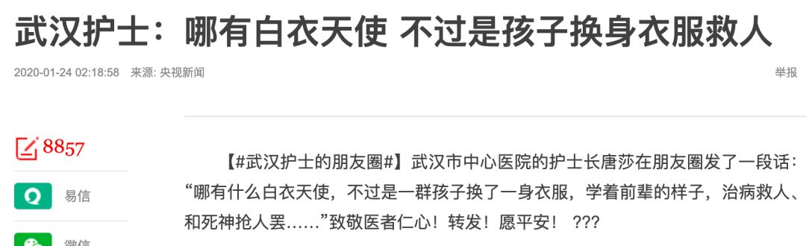
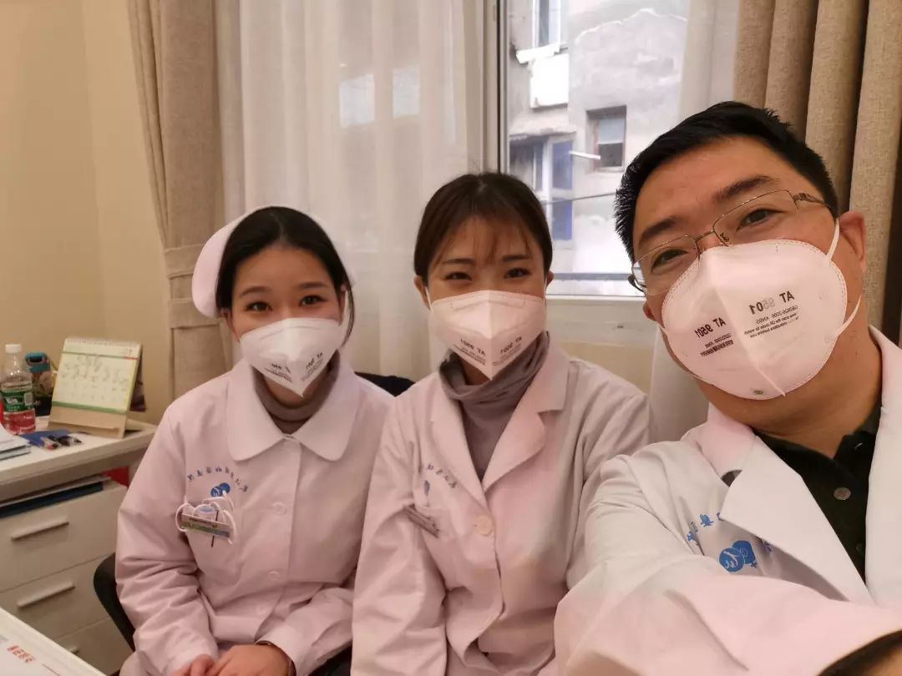
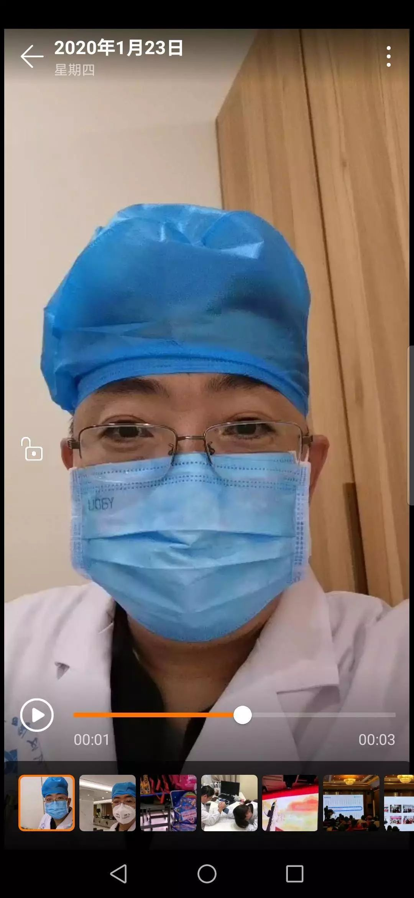
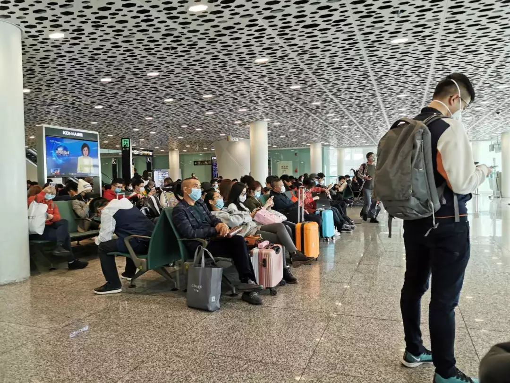
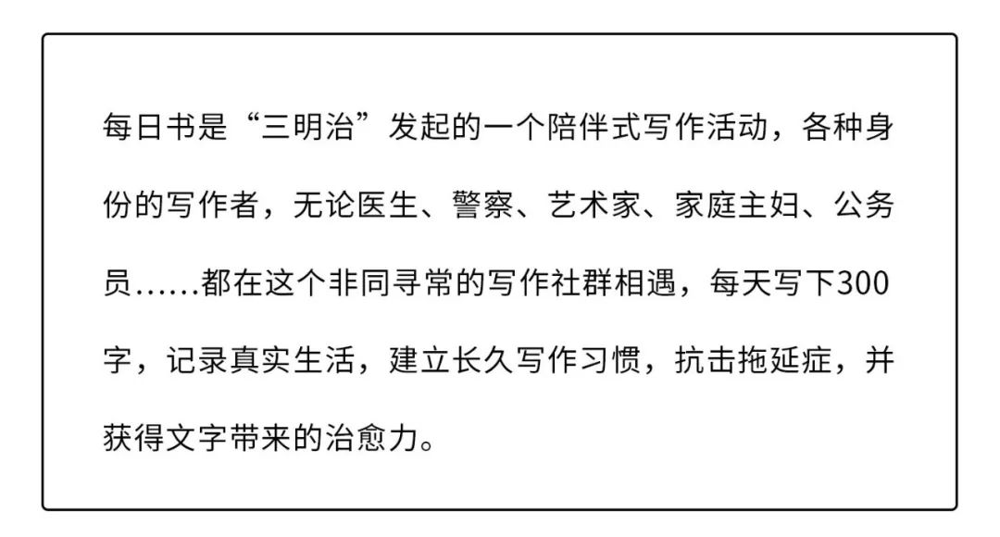
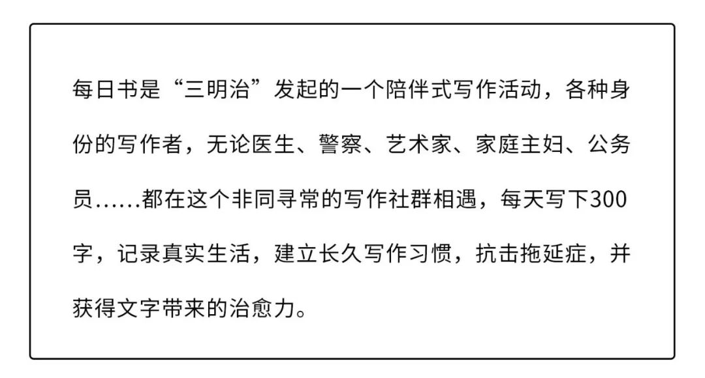

号外｜武汉封城后的24小时
原文链接 备份链接 本文由娱志The Review原创出品 华东师范大学传播学院学生娱评号 转载需申请授权 作者 | Moe，苏博 编辑 | 华实 导语 “自2020年1月23日10时起，全市城市公交、地铁、轮渡、长途客运暂停运营；无特殊 …

昨天是武汉封城第一天，三明治紧急发起了每日书特别版《武汉日常》，邀请人在武汉和家乡在武汉的朋友，一起来用文字忠实记录他们在这个特殊时期的生活日常。
招募一经发出，就有近百位朋友迅速响应，其中有一路哭着坚持回家过年的北漂，有跟妈妈去武汉探亲的高三女生，有一直听见窗外救护车声的母亲，有在美国关心着疫情的武汉媳妇，有今天就要启程去建设应急医院的朋友……这其中已有50位，开始在每日书中记录他们的“武汉日常”。
接下来，我们将争取每天摘录一部分他们的每日书，作为大疫情之下的真实片段，为时代留下一点普通人的痕迹。
今天是第一篇，我们选取了5个和武汉有关的生活切片，作为武汉“封城”第一天的记录之一。
01
一位哭了半途终于回家的女儿
作者：冰点
坐标：武汉
职业：分析师
我在北京工作，早早地就定好了过年回武汉的车票。到小年夜的时候，世界还是一片祥和。我满脑袋都是这周只休一天的紧张，因为下周就要回家过年了，我还有好多事情没有做完。
1月19号那天，有些令人不安的消息开始蔓延。大家都在讨论武汉肺炎，有些人发消息问我过年还回家吗。那时我还没有当回事，我说再怎么样家还是要回去的。但互联网的信息传播速度有时快到令人心慌。
第二天早上醒来，铺天盖地的就都是武汉爆发肺炎的情况了。我在去上班的公交车上把所有消息刷了一遍，然后开玩笑似的发了一条朋友圈：“既然如此，请大家多多关爱即将回到疫区中心的我好吗？”
从那一天开始，所有的群像爆炸了一样，各种不知道真假的消息纷纷涌现。大家的危机意识好像一瞬间冲到了顶点，许多武汉及周边城市的同学、朋友们都开始讨论退票留守的事情——但我始终没有动摇过，我想回家和爸妈一起过年。
我们一直是一家三口聚在家里吃年夜饭。爸妈会早早地准备好菜谱和食材，哪怕只有三个人，大年三十的饭桌上也能摆满各种美味佳肴。我们会热热闹闹地、大张旗鼓地吃完年夜饭，然后一家人坐在沙发上喝茶、吃点心、抢红包、看春晚，在没有鞭炮声的0点共同迎来新的一年——很平常的流程，却是我们一家人最重要的年终仪式。
但在这样的现状下，回家的决定却做得非常不容易。21号开始，陆续有人劝我不要回家。各种耸人听闻的消息层出不穷，好像进一趟武汉再出来就会变成浑身病毒的“生化人”。我看到了所有的消息，也劝说爸妈及时戴上了口罩，减少出门。在这个时刻我想得非常清楚，我的体质很好，而且我会做好防护、远离人群、时刻观察身体状况，保证自己的健康；如果真的不幸被感染，我一定会第一时间去医院，避免传给其他人……
可是在周围人的舆论面前，我仍然感觉自己像一个大逆不道的罪人。每当他们讨论起“武汉人”，我都会觉得是在指责我。在他们眼里，每个去过武汉的人都是随时可能爆发的“病毒炸弹”。我分不清大家的劝阻是关心我，还是关心他们自己。
好在还是有一些朋友对我表示了理解。有个学流行病学的朋友和我分享了她当年因为H1N1被隔离的经历，叫我不要过度恐慌，但一定要做好防护；还有朋友说：“如果是我，我也想回家，没啥原因。你问我怕不怕，我也怕。但你问我为啥回去，可能就因为家在那里。”
那天晚上，我在下班的公交车上哭了一路。我知道回家的风险太高了，我也能理解周围人的担忧，但在这样的时刻里，我还是想回家。我坐在公交车最角落的位置上，戴着口罩，看着玻璃窗上自己的影子。眼泪都流进了口罩里，没有人注意我。
我又发了一条朋友圈：人类的悲喜并不相通，我只想回家和爸妈一起过个年。
1月22号下午，我坐上了回武汉的高铁，一路上都戴着非常难受且不透气的N95口罩。晚上23点我到了家，喝了一碗排骨藕汤，向熟悉的朋友报了平安，就沉沉地睡去了。第二天早上一觉醒来，手机上突然有好多条消息，都是在告诉我——武汉封城了。
我对朋友们的关心和担忧一一表达了感谢，内心却十分的平静和安宁。我甚至在想，幸好我回来了，否则就是孤身留守北京的我，和同样孤独被“封”在疫区里的爸妈，两地相隔了。
我不知道疫情还会发生怎样的变化，也不知道自己回北京之后会遭受怎样的非议。但此时此刻，我和爸妈在一起，在自己熟悉的家里。所以我不怕。
02
一位丈夫被封在城外的两岁女儿的妈妈
作者：芭蕉小野妹子桑
坐标：武汉
职业：教师
2020年1月23日，是封城的第一天，其实前一晚看到封城的消息（凌晨两点）之后我彻夜未眠，没想到有生之年还会见证这样的历史时刻，内心深处产生了深深的恐惧和担忧。
之前网上铺天盖地的信息，我过滤之后发到家族群里，长辈都不当回事，真的是网文所说那样“300万父母拒绝戴口罩”……直到前几天钟南山院士通过媒体发言说病毒会人传人，武汉市长通过媒体回答了了冠状病毒的相关问题，大家才逐渐意识到局势的严峻。政府也同时出台了公共场合必须戴口罩的条例，这个时候，我的家人，才开始戴起了口罩。今天凌晨四点我们在工作群报平安，原来大家都没睡，也对，怎么可能睡得着……
封城消息发布之后，我猜天亮后大家肯定会去疯狂采购日用物资，去加油，囤货。果不其然，真的是这样。

十点半，我起床后带着口罩出门，结果因为太晚了，并没有买到很多东西，只在楼下小店买了30个鸡蛋和一瓶生抽，还有三斤冰糖橘。看到生姜醋的时候我想要不要给我老公买起一瓶，他喜欢吃饺子的时候沾着吃。我拿起瓶子走了几步，后来又放了回去。因为我老公回不来了，他今天回武汉的航班已经被取消了。突然有点想他。
然后我去找我闺蜜拿口罩，网上订购的全部不发货了，头天晚上还在积极的群内团购，结果市内物流也暂停了，我只能开车去找闺蜜救济了。现在她手里只有这种医用外科口罩，问我要不要，我当然说要啊！

路上行人戴口罩率百分之百，大家面色凝重，眼神中全写着“防备”，身边的人稍有咳嗽或者发出喉咙不适的声音，就会皱眉逃遁。这样的氛围跟最近的天空一样，白茫茫、灰蒙蒙，像怎么都擦不干净的老式厚玻璃，令人绝望。
闺蜜戴着口罩站在我车副驾位置的车窗跟我聊了几句，大概就是互道珍重，注意防护，不要出门，说了下在一线家里人的情况。说完，不知怎么我们两个就要掉眼泪。
“哪有什么白衣天使，不过是一群孩子换了一身衣服，学着前辈的样子，治病救人、和死神抢人罢了……”

（图片来自网络）
哪有什么人民卫士，不过是一群别人家的儿子在这样的灾难面前，挨家挨户去规劝没有戴口罩的长辈注意防护，取消聚会，取缔麻将室……
感恩前线的战士为我们所做的付出。
后来开车回家路上，我一直控制不住掉眼泪，进门前擦干了眼泪，怕家人担心。以前非典的时候我还小，什么都不知道，现在我当了母亲，上有老下有小，真的很害怕。
下午六点我另外一个闺蜜给我送来了预防的药，同样也是药房断货的品类。同样也是站着远远的戴着口罩“交货”，希望我和我的家人都用不上。

因为昨晚没睡，下午我睡了两个小时，醒来后女儿给我送来自己剥好的橘子，还送了本书给我看。我发了一条朋友圈，说“咱们不能出去，就努力开心吧”。很多朋友都点赞，这大概是绝大多数武汉同龄人的心态，既然不能出去，要守着家乡，守着家人，那么就努力保持阳光心态！
晚上看到孩子熟睡的安然模样，让我在那一瞬间差点忘了的这场灾难的降临。如果等她睡醒了，大年三十这一天，爸爸也回来了，我们一家三口能够在一起看春晚，该多好。
03
一位开车60公里接送朋友的女生
作者：FF
坐标：武汉 东西湖区 金银湖
职业：淘宝女装从业者
1月23日早上9点，还在睡梦中的我被手机的震动声吵醒。打开微信看到武汉封城，公共交通全部停运的消息，当时真的有点难以置信。
我赶紧联系了在地铁工作的闺蜜，她告诉我地铁至少要停运9天。之前虽然每天都有看到疫情的报道，但并没有感受到它会影响我们的基本生活，今天我才感觉到这场疫情的严重性，当下第一反应就是去超市采购食物和生活用品。
本来想睡懒觉的我赶紧爬起来，和爸爸一起戴上口罩开车去了离家不远的一家超市采购。到了超市，跟想象中一样人特别多，超市的手推车都不够用，蔬菜水果的过称台排起了长队。
我们为了节省时间，没有买需要过称的生鲜。挂面，方便面的货架已经空了，那一刻真的感到一丝紧张，心情也十分复杂。感觉一夜之间事态变化得太快了，之前觉得出门只要做好防护措施就够了，而如今的疫情好像超出了我们的想象。
我和爸爸迅速采购完一些食物和必需品就赶紧离开了超市。回到小区附近，爸爸去小区门口的小超市想补充一些蔬菜，但是大部分已经卖完了，我们就在剩下的蔬菜里挑了一些回家了。
回到家中简单地吃过午饭，微信里不断收到朋友们发来的疫情报道。朋友圈里都在转发相关信息，大家都Po了一些超市货架被买空的图片，加油站加油排长队的视频。
前两天那些在外地工作的朋友全部都退票不回武汉了，当时我还在想，太可惜了有好多朋友过年都见不到了。然而今天看到朋友圈，去外地旅游的朋友回武汉的航班也都被取消了，他们只能滞留在外地过年了。
我突然想起还在地铁值班的闺蜜，赶紧问她几点下班有没有车回家。她告诉我她下班可能打不到车还不知道怎么回家，我说你下班我开车去接你回家。在这种紧急时刻我能做的就是帮助一下身边的朋友。
下午5点左右我开车去虎泉地铁站接到下班的闺蜜，从武昌到汉口一路畅通，街上车很少，出租车更是屈指可数，路上基本没有什么行人，偶尔还可以看到外卖小哥经过。一路上我们也在谈论疫情和她的工作情况。地铁的工作人员也很辛苦，虽然停运了，但是地铁站里每天依旧需要值班人员。送她回家以后，我也赶紧回家了。虽然来回开了60公里，但是至少让闺蜜安全到家了，也是一件欣慰的事。

虎泉地铁站A出口附近
今天一天我一直都有点懵，从大早上到下午，我可能还没有适应疫情给我们带来的不便。隔一会儿微信就会收到朋友发来的疫情消息，看到上海的医护工作者都来支援武汉，真的很感动。
我最近在看一部美剧《良医》，联想到武汉的医护工作者，他们肩上抗的都是责任，真的很伟大。然而，现在这个重要关头，我们普通民众应该做什么？我们可能不需要像医护人员那样战斗在一线，我们也不需要在自己的工作岗位上继续坚守。
我想我们能做的就是照顾好自己的家人和朋友，在这个重要时刻给予他们力所能及的帮助。一句问候，一声祝福，在此时此刻都是一份爱的鼓励。我很感谢我微信里每个关心我的朋友，最近泪点也很低看到朋友关心的消息我总想哭。
虽然疫情不知道要持续多久，但作为一个土生土长的武汉妹子，我相信大武汉一定能坚持住。
04
一位主动选择留下的妈妈
作者：若辰
坐标：武汉
职业：家庭主妇
1月23日早晨我们听到姐夫急促的敲门声，他告诉我们武汉封城了，说爸爸凌晨听到护士说封城，就赶紧给他打电话，因为我和先生的手机都关机了，让我们看看有没有可能赶紧走。
一查，航班都停了，火车也停了，走不了了。后来有朋友发现我们还在武汉，说可以叫车去周边城市，再转火车或飞机。姐姐也打电话来问我们走不走。我们犹豫了一下，决定不走。到中午，有在日本的朋友发微信给我：“东华，我不明白你们为什么不走！”隔着屏幕我都能感觉到她那急迫的语气。
是的，我们为什么没走？我掩面深思。
一来太仓促，一家五口，三个孩子，也不是说走就能走的，而且老二还在姐姐家；二来，想着封锁的措施就是为了减少流动，如果都蜂拥着出去，不是起反效果了吗？三来，念及还在病床上的爸爸，因为医院的调整，他今天要被转到哪里还不可知。不想就这样离去。一去不知什么时候能再回来。
当时挺安心的。觉得既来之则安之，一家人安心在一起。但到了下午，形势越来越紧。我开始在想我们是不是做了错误的决定。我自己并没什么，但怕亲人们担心，孩子们受累。
安静下来祷告，又想到财新的记者萧辉，她昨晚采访时接触了大量高危人群，当时并不知道，虽然穿了防护服，但一切未知，所以留在武汉，自己隔离。我们是一家人在一起，而她是独自一个人。想到她就开始流泪，于是继续祷告……
05
一位在“半一线”留守的医生
作者：善随爱生
坐标：武汉市汉阳区
职业：医生
 这是1月21号晚上，我们毅然决然从贵阳返回武汉
这是1月21号晚上，我们毅然决然从贵阳返回武汉
今天是武汉封城的第一天，对于武汉肺炎这次疫情，我开始就有不安的预感。
本人是学医的，也经历过2003年的非典，当时我在山西省计划生育科研所工作，作为一个医务工作者，在抗非典期间算是半一线吧。所以从武汉市12月份疫情出来，当时网上沸沸扬扬传得像SARS一样，但是，卫监官员又公布说人不传人的时候，我其实就有点不安的预感。
我是山西人，在湖北工作多年，现在所在的一家医院是专门做辅助生殖，试管婴儿的。当钟南山出来说存在人传人，而且医务人员已经被感染之后，我们感觉到了事态的严重性！
作为一个专科医院，我们承担的主要是对不孕不育的辅助治疗，因为这不是急诊，我们就制定了一个应急方案，把不需要马上进行治疗的患者往后延，让我们的医生逐个去打电话通知他们：鉴于现在武汉的疫情情况，建议他们不要来武汉。对已经进入治疗周期的病人，我们尽可能采用安全的方法，把这些事情处理完。
其实我们从1月19号就开始做这些工作的准备了。另外，对本院的员工进行合理的安排和分流，对于不在武汉居住的湖北籍同事，建议他们回家，并要求自我隔离，每天我们有微信群来互相报各个部门的人员的体温情况，如果有异常就让他们及时去当地的防疫部门去报备。
这是1月22号封城前一天我们在门诊的日常
目前留守在单位的员工有20多人，我作为主要负责人，和我们几个院长在关键时刻站出来，主动坚守在临床一线。
封城第一天在门诊
这几天每天都有手术，今天早上做了四台取卵，然后七台移植，明天还有四台取卵，随后几天取卵的会逐渐变少，我们尽可能让患者平稳安全地把这个治疗过程做完。
对于疫情的前因后果，我不想再多说什么敏感的话题，但是作为一个老百姓，作为一个平平常常的人，作为一个医生来讲，真的感觉到了病毒的无情。作为一个平凡的人，一定要学会保护自己，用科学的方法，一定要记得戴口罩，勤洗手，一定要注意个人的防护。

封面图：深圳机场，由湖北人老鹰拍摄
💬
本文来自每日书武汉日常班，50名作者正在和我们一起每日记录。
如果你也在武汉，也想一起和我们记录下这个特别时期的生活日常，欢迎加入每日书特别版武汉日常（点击跳转查看）。
也欢迎大家留言告诉我们你的现状，无论目前你是否在武汉，你的生活是否也受到这场疫情的影响。
 



了解2月每日书详情
点击即可免费参与⬇️
原文链接 备份链接 本文由娱志The Review原创出品 华东师范大学传播学院学生娱评号 转载需申请授权 作者 | Moe，苏博 编辑 | 华实 导语 “自2020年1月23日10时起，全市城市公交、地铁、轮渡、长途客运暂停运营；无特殊 …
原文链接 备份链接 2020年1月23日凌晨2点，武汉市宣布自10时起交通封城，尽管很多人还在睡梦之中，在8个小时的窗口时间内，仍有很多人选择连夜出城。更多的人，则留了下来，有的人别无选择，有的人则担心自己无论去哪里都是潜在的传播者。一位 …
原文链接 备份链接 1月23日清早起来时，看到武汉封城的消息。起床后跟正在做饭的母亲说了一声，母亲不是很能理解，也不大关注。这几天一直在她耳边念叨太多疫情的事情，我感觉她都有些消化不过来了。很快黄冈市区也封城了，到了下午我老家武穴也传出了 …
原文链接 备份链接 文 | 王彦入 王丹妮 程静之 殷盛琳 李晓芳 周航 叶雯 曾宪雯 编辑 | 王珊 陶若谷 33岁的刘科戴上两层口罩独自走进地铁，夹杂在路人中间。像他这样拉着行李箱的人并不少见，彼此间默契地保持着距离。三天前，他刚刚从 …
原文链接 备份链接 开启更有意思的武汉！请点击上方优良better →点击右上角“…” → “设为星标 ” 22号下午三点半，记者王菁从武汉站坐上回家的动车，随身携带一个粉色双肩包，和一个二十四寸的棕色行李箱，里面放 …